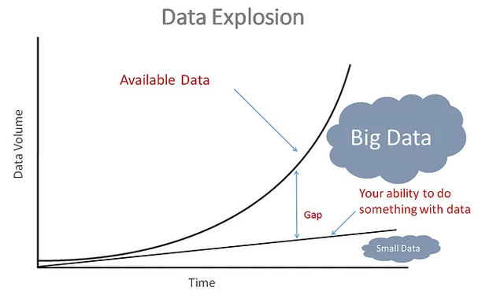

Guillaume Eynard-Bontemps and Emmanuelle Sarrazin, CNES (Centre National d’Etudes Spatiales - French Space Agency)
2024-01
Process ever larger and more numerous datasets

https://towardsdatascience.com/machine-learning-with-big-data-86bcb39f2f0b
| CSV | HDF5 | Parquet | Feather | Avro | Zarr | |
|---|---|---|---|---|---|---|
| Format | Row | Array | Column | Column | Row | Array |
| Writing | - - - | - - | + | +++ | ++ | + |
| File size | - - | - - - | ++ | + | ++ | ++ |
| Compression | no | no | +++ | + | + | +++ |
| Reading | - - | - - - | ++ | +++ | + | ++ |
The optimum format depends on: